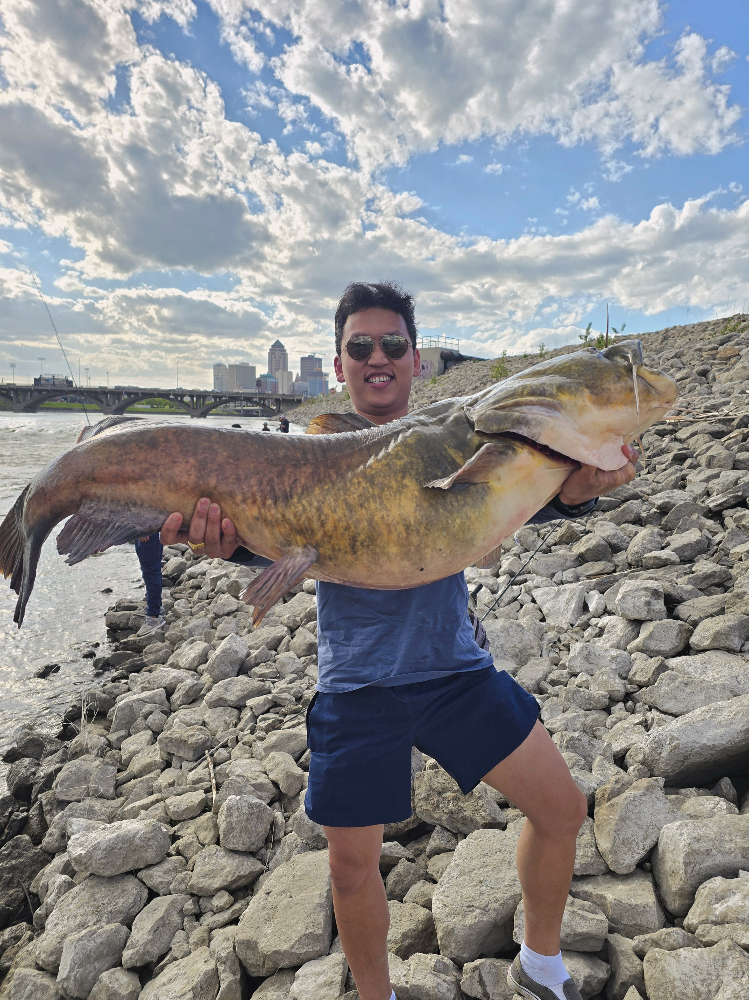
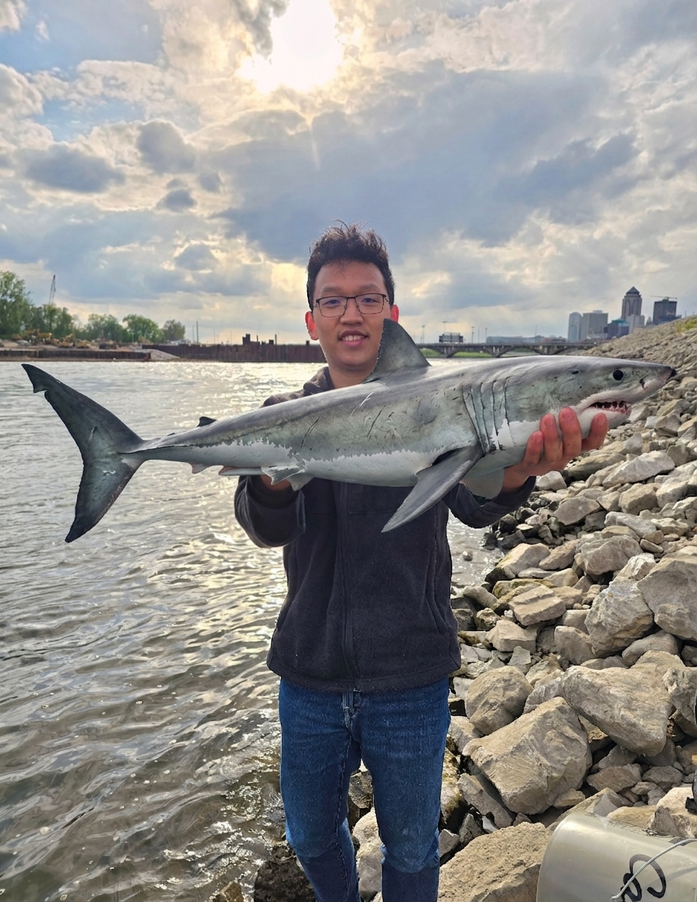

Catch of a Lifetime
I've been fishing for as long as I can remember. I started with my dad when I was a kid, and it has been a major hobby of mine ever since. Fishing is a big part of my life, so when I helped move my sister to Pleasantville, Iowa back in the fall of 2024, the last thing I did that day was go fishing.
I was exhausted after a long day of moving, but being out on the river in the evening was incredibly relaxing. I ended up catching four walleyes and a couple of nice bass that night. It made me realize that Owatonna was never going to be able to fulfill that part of my life. With Quinn having left the month before, I really didn’t have much keeping me there, and the fishing was just another major pro for moving back to Iowa.
Over the years, I've had a lot of great catches, but nothing compares to the one I made on that fateful day: May 7, 2026. I reeled in a massive, 65-pound flathead catfish—the biggest I've ever caught in my life, and a fish that has likely been roaming the earth longer than I have.

It was just another typical Thursday—work, go home, walk Gibby. But with the weather being so beautiful and cool, as soon as I finished Gibby's walk, I grabbed my rod and drove back to downtown Des Moines to fish the Des Moines River.
When I got to the riverbank, I ran into my newly found fishing buddy, Jeremy. I met him back in April, and we've fished together a few times coincidentally since we both love it so much. He's a super friendly guy and has taught me a lot about fishing this specific river, saving me from having to figure out what works and what doesn't on my own.
Shortly after getting there, probably only 5 to 10 minutes into fishing, I suddenly felt as if I had hooked onto a giant tree branch. At the beginning, I didn't even know it was a massive fish; it honestly just felt like a heavy, dead weight. I knew I wasn't snagged on something immovable like a rock, so I fought hard reeling it in, still convinced it was just a giant branch.
That was until I got it about 10 yards from the bank and—kaboom. It made a huge run, pulling out 20 to 30 yards of the line I had just worked so hard to reel in. My adrenaline started pumping right then. I knew it was a monster.
My biggest problem now was that I was using a fishing rod meant for 2-to-3-pound bass with 15-pound test line. I simply didn't have the proper equipment to fight a fish of this caliber. Truthfully, I was doubtful I'd even land it. I've lost bass anywhere from 4 to 8 pounds in the past just because my line was too small or my hook was too weak. Because I normally just target crappie and bass, I've never intentionally fished for giant catfish, so I didn't own a rod rated for 50-to-100-pound fish.
Still, I was determined to give it a shot. Jeremy saw the fish go on that initial run and told me that with my current setup, I was going to be fighting it for a long time—and he wasn't kidding. The fight lasted well over 40 minutes, and by the end of it, I couldn't even move the fingers on my right hand.
The entire battle consisted of me pulling my rod tip straight up toward the sky, then quickly lowering it and reeling in as fast as I could to gain ground. I did that over and over and over again. I'm not kidding—every single time I got that fish within 5 to 10 yards of the bank, he'd take off on another run. After doing that for 40 minutes, I was completely exhausted, and so was the fish. I felt so defeated that I honestly would have been fine if I lost him; I just didn't have much left in the tank. Thankfully, the fish felt the same way.
Throughout that entire 40-minute war, I never once saw the fish surface until the very end, when he finally got close enough for Jeremy to net him. My heart started racing the second he was in the net. I couldn't believe my eyes, and neither could anyone else around me. I had never seen something so massive, and the same went for the crowd that had stopped to watch the battle. The Iowa state record for a flathead catfish is 81 pounds—I was only 16 pounds away from breaking it. Jeremy mentioned he’d been fishing the Des Moines River for years and this was the biggest one he had ever seen.
Throughout that entire 40-minute war, I never once saw the fish surface until the very end, when he finally got close enough for Jeremy to net him. My heart started racing the second he was in the net. I couldn't believe my eyes, and neither could anyone else around me. I had never seen something so massive, and the same went for the crowd that had stopped to watch the battle. The Iowa state record for a flathead catfish is 81 pounds—I was only 16 pounds away from breaking it. Jeremy mentioned he’d been fishing the Des Moines River for years and this was the biggest one he had ever seen.
After I grabbed a couple of pictures, Jeremy took a few too, and then it was time to let him go. I gently released him headfirst back into the water. As he swam off, he gave a giant splash with his tail, slapping a taste of the river water right onto my lips. Yum. There was so much adrenaline that night, I think I got 4 hours of sleep that night if I remember correctly. I was so excited to tell everyone, my family, friends and even co-workers. I was happy and they were all happy for me.
Oh, here's a great white shark I caught out of the Des Moines as well. If you imagine hard enough, you'll see the catfish I caught a couple days back, except that one was only 12 pounds. Still an impressive fish, but it ain't 65.
